|
|
|
Sponge
crab
Family Dromiidae
updated
Feb 2020
if you
learn only 3 things about them ...
 They use living sponges or ascidians as a disguise. They use living sponges or ascidians as a disguise.
Specialised legs grip the disguise.
They
tend to move slowly. |
|
Where
seen? This intriguing crab is seen on our Northern
shores, in coral rubble and seagrasses areas. Those seen often 'carry'
ascidians and not sponges.
Features: Body nearly spherical width 0.5-5cm, although sometimes larger ones
are encountered. Some have a smooth body and pincers covered with
fine hairs and pink tips on the pincers. Other have a very hairy
body and pincers, with white tips on the pincers.
The sponge crab uses its pincers to snip out a cap out of a living ascidian or sponge to fit over its body. To grip this cap as it walks around, the crab's
last pair of legs are slender, bent over its back and tipped with
sharp little claws. The ascidian or sponge continues to live and
grow and the crab constantly trims it to the right size. The crab's
camouflage is do good that it is almost impossible to spot unless
it moves. The disguise usually tastes bad and provides additional
protection by discouraging predators from taking a bite out of the
crab even if it is discovered. Like other crabs that rely on a disguise,
it tends to move slowly.
What does it eat? The sponge
crab is a scavenger, eating dead plants and animals that it comes
across.
Sponge
crab babies: Females have distinctive longitudinal
grooves
on the underside. The eggs of some species hatch into young
crabs instead of free-swimming larvae. These young shelter for
some time under their mother's abdomen. |
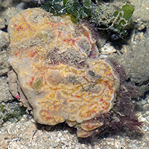
From above, looks like just
another uninteresting blob.
Chek Jawa, Aug 05 |
|
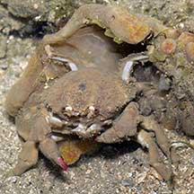
The crab is underneath! |
|
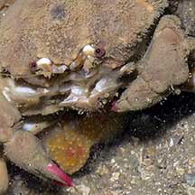
Pink tips on the pincers. |
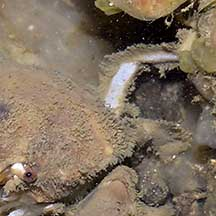
Last two pairs of legs bent over
its back to grip the disguise. |
|
Species are difficult
to positively identify without close examination.
On this website, they are grouped by external features for convenience of
display.
| Sponge
crabs on Singapore shores |
| Other sightings on Singapore shores |
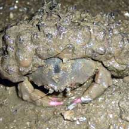
Pasir Ris Park, Jul 08
Photo shared by Loh Kok Sheng on his
blog. |
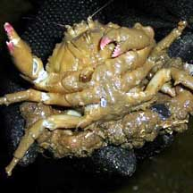
Pasir Ris Park, Jul 08
Photo shared by Loh Kok Sheng on his blog. |
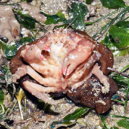
Changi, Dec 17
Photo shared by Loh Kok Sheng on facebook. |
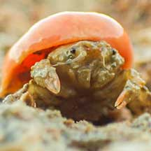
East Coasr Park (B), Jun 21
Photo shared by Vincent Choo on facebook. |
|
|
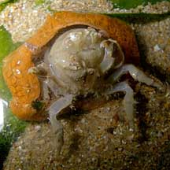
Tuas, Jun 10
Photo shared by Toh Chay Hoon on her
blog. |
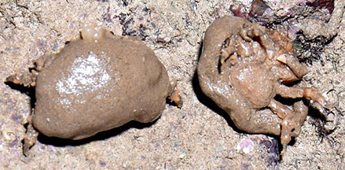
Berlayar Creek, Feb 20
Photo shared by Loh Kok Sheng on facebook. |
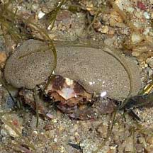
Sentosa, Nov 09
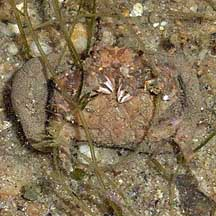
Photo shared by Loh Kok Sheng on his
blog. |
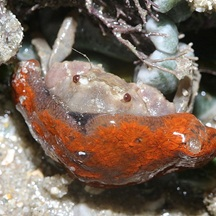
Cyrene Reef, Aug 11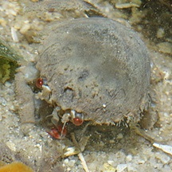
Photo shared byJames Koh on his
blog.
|
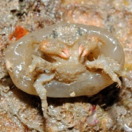
Terumbu Selegie, Jun 11
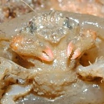
Photo shared by Loh Kok Sheng on his
blog. |
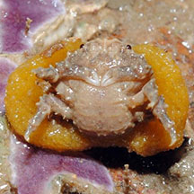
Sisters Island, Dec 12
Photo shared by Loh Kok Sheng on flickr. |
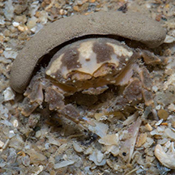
Sisters Island, Feb 17
Photo shared by Marcus Ng on facebook. |
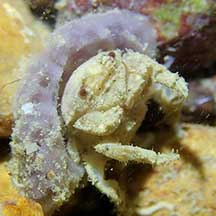
Small Sisters, Aug 21
Photo shared by Jianlin Liu on facebook. |
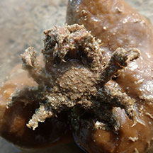
Beting Bemban Besar, Aug 18
Photo shared by Jianlin Liu on facebook. |
|
|
Family
Dromiidae recorded for Singapore
from
Wee Y.C. and Peter K. L. Ng. 1994. A First Look at Biodiversity
in Singapore
+from The Biodiversity of Singapore, Lee Kong Chian Natural History Museum.
*from Tan, Leo W. H. & Ng, Peter K. L., 1988, A Guide to Seashore
Life.
**from WORMS
| |
+Cryptodromia amboinensis
Cryptodromia
canliculata=**Cryptodromia fallax
Cryptodromia coronata
Cryptodromia demani
*Cryptodromia pileifera (Tunicate crab)
Cryptodromia tuberculata
+Dromidia sp.
Dromidia unidentata
Dromidiopsis indica
Dromidiopsis edwardsi
+Epigodromia aff. sp.
+Lewindromia unidentata |
|
Links
References
- Ng, Peter
K. L. and Daniele Guinot and Peter J. F. Davie, 2008. Systema
Brachyurorum: Part 1. An annotated checklist of extant Brachyuran
crabs of the world. The Raffles Bulletin of Zoology. Supplement
No. 17, 31 Jan 2008. 286 pp.
- Lim, S.,
P. Ng, L. Tan, & W. Y. Chin, 1994. Rhythm of the Sea: The Life
and Times of Labrador Beach. Division of Biology, School of
Science, Nanyang Technological University & Department of Zoology,
the National University of Singapore. 160 pp.
- Wee Y.C.
and Peter K. L. Ng. 1994. A First Look at Biodiversity in Singapore.
National Council on the Environment. 163pp.
- Ng, P. K.
L. & Y. C. Wee, 1994. The
Singapore Red Data Book: Threatened Plants and Animals of Singapore.
The Nature Society (Singapore), Singapore. 343 pp.
- Jones Diana
S. and Gary J. Morgan, 2002. A Field Guide to Crustaceans of
Australian Waters. Reed New Holland. 224 pp.
|
|
|